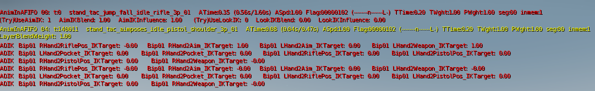
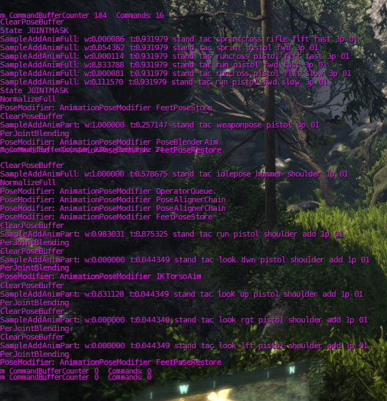

Layered Transition Queue Debugging
You can enable on-screen debug information to see which animations are queued and playing, as well as information about the applied pose modifiers and IK. See Animation Layers for more information about the system.

Example output.
Show Per Entity
You can show the transition queue for all the characterinstances of a specified entity.
es_debuganim <entityname> [0 | 1]
Property | Description |
|---|---|
<entityname> | the name of the entity to debug. In a single player game, the player is typically called "dude". |
[0 | 1] | Specify 1 or no second parameter to turn it on for this specific entity. Specify 0 to turn it off. |
Examples...
es_debuganim dude 1
Turn on debugging for the player (assuming the player's entity is called "dude").
es_debuganim npc_flanker_01 0
Turn off debugging for the entity called npc_flanker_01
Show Per CharacterInstance
You can show the transition queue for all characterinstances or the ones that have a specific model name.
ca_debugtext [<modelname-substring> | 1 | 0]
- If 1 is specified, all character instances are shown.
- If 0 is specified, the debug text is turned off.
- If <modelname-substring> is specified, shows information for all characterinstances whose modelname contains the specified string.
Examples...
ca_debugtext player
Show information on all character instances with "player" in their model name.
ca_debugtext 0
Turn off all transitionqueue information.
Interpreting the Output
Each animation in the transition queue is displayed with a couple of lines like the following. The parts are explained below.
AnimInAFIFO 02: t:1043 _stand_tac_idle_scar_3p_01 ATime:0.84 (1.17s/1.40s) ASpd:1.00 Flag:00000042 (----------I-K----) TTime:0.20 TWght:1.00 seg:00 inmem:1
(Try)UseAimIK: 1 AimIKBlend: 1.00 AimIKInfluence: 1.00 (Try)UseLookIK: 0 LookIKBlend: 0.00 LookIKInfluence: 0.00
MoveSpeed: 4.49 locked: 1
PM class: AnimationPoseModifier_OperatorQueue, name: Unknown
...
LayerBlendWeight: 1.00
...
ADIK Bip01 RHand2RiflePos_IKTarget: 0.24 Bip01 RHand2Aim_IKTarget: 1.00 Bip01 LHand2Aim_IKTarget: 0.00
Text Color
- When an animation is not active yet, it will be black or green.
- When an animation is active, it's red or yellow.
Or in detail:
- Red Channel = Animation Weight.
- Green Channel = (layerIndex > 0)
- Alpha Channel = (Weight + 1)*0.5.
AnimInAFIFO Line (one per animation)
AnimInAFIFO 02: t:1043 _stand_tac_idle_scar_3p_01 ATime:0.84 (1.17s/1.40s) ASpd:1.00 Flag:00000042 (----------I-K----) TTime:0.20 TWght:1.00 seg:00 inmem:1
Part | Explanation | |||||||||||||||||||||||||||||||||||||||||||||||||||
|---|---|---|---|---|---|---|---|---|---|---|---|---|---|---|---|---|---|---|---|---|---|---|---|---|---|---|---|---|---|---|---|---|---|---|---|---|---|---|---|---|---|---|---|---|---|---|---|---|---|---|---|---|
AnimInAFIFO 02 | Layer index (decimal, zero-based). | |||||||||||||||||||||||||||||||||||||||||||||||||||
t:1043 | User token (decimal). | |||||||||||||||||||||||||||||||||||||||||||||||||||
_stand_tac_idle_scar_3p_01 | Animation name (alias) of the currently playing animation, aim/look-pose or bspace. | |||||||||||||||||||||||||||||||||||||||||||||||||||
ATime:0.84 (1.17s/1.40s) | ATime:XXXX (YYYYs/ZZZZs)
| |||||||||||||||||||||||||||||||||||||||||||||||||||
ASpd:1.00 | Current animation speed (1.0 = normal speed). | |||||||||||||||||||||||||||||||||||||||||||||||||||
Flag:00000042 (----------I-K----) | Animation Flags Flag:XXXXXXXX (+ybVFx3nSIAKTRLM) The first number is the animation flags in hexadecimal. Between parentheses you see the individual flags:
| |||||||||||||||||||||||||||||||||||||||||||||||||||
TTime:0.20 | Transition Time | |||||||||||||||||||||||||||||||||||||||||||||||||||
TWght:1.00 | Transition Weight | |||||||||||||||||||||||||||||||||||||||||||||||||||
seg:00 | Current segment index (zero-based). | |||||||||||||||||||||||||||||||||||||||||||||||||||
inmem:1 | Whether or not the animation is in memory (0 basically means it's not streamed in yet). |
Aim/Look-IK Line
(Try)UseAimIK: 1 AimIKBlend: 1.00 AimIKInfluence: 1.00 (Try)UseLookIK: 0 LookIKBlend: 0.00 LookIKInfluence: 0.00
Part | Description |
|---|---|
(Try)UseAimIK: 1 | Whether Aim IK is turned on or not. (set using PoseBlenderAim::SetState). |
AimIKBlend: 1.00 | Weight value requested for Aim IK. (could go up and down based on fade times etc). |
AimIKInfluence: 1.00 | Final influence weight value of AimIK. (== smoothed(clamped(AimIKBlend)) * weightOfAllAimPoses). |
(Try)UseLookIK: 0 | Whether Look IK is turned on or not. |
LookIKBlend: 0.00 | Weight value requested for Look IK. (could go up and down based on fade times etc) |
LookIKInfluence: 0.00 | Final influence weight value of LookIK. (== smoothed(clamped(LookIKBlend)) * weightOfAllLookPoses). |
Parameter Line(s) (only for blend spaces)
MoveSpeed: 4.500000 locked: 1
TravelAngle: 0.000000 locked: 0
Part | Explanation |
|---|---|
MoveSpeed: 4.500000 | Value for the specified blendspace parameter (MoveSpeed in this case). |
locked: 1 | Whether or not the parameter is locked (= unable to change after it is set for the first time). |
PoseModifier Lines (if running)
PM class: AnimationPoseModifier_OperatorQueue, name: Unknown
Displays which pose modifiers are running in this layer. The class as well as the name is shown (if available).
LayerBlendWeight Line (not on layer 0)
LayerBlendWeight: 1.00
The weight of this layer (0.00 - 1.00).
ADIK Line(s) (only if animation driven IK is applied)
ADIK Bip01 RHand2RiflePos_IKTarget: 0.24 Bip01 RHand2Aim_IKTarget: 1.00 Bip01 LHand2Aim_IKTarget: 0.00
Displays a list of the animation driven IK targets and their current weight. For more detailed position/rotation information you can use the separate cvar "ca_debugadiktargets 1".
CommandBuffer Debugging
At the lowest level the animation system executes a list of simple commands to construct the final skeleton's pose.
These commands are for example "sample animation x at time t, and add the result with weight w to the pose". Or "clear the pose".

Example output.
You can enable on-screen debug information to see what is pushed on the command buffer (for all characters) using the following command:
ca_debugcommandbuffer [0 | 1]
Warning Level
You can control when the animation system produces warnings using the ca_animWarningLevel cvar:
ca_animWarningLevel [0 | 1 | 2 | 3]
| ca_animWarningLevel | Description |
|---|---|
| 0 | Non-fatal warnings are off. |
| 1 | Warn about illegal requests, for example requesting to start animations with an invalid index. |
| 2 | Also warn about things like 'performance issues', for example animation-queue filling up. This might 'spam' your console with a dump of the animation queue at the time of the issue. |
| 3 (default) | All warnings are on. This includes the least important warnings, e.g. a warning when playing uncompressed animation data. |
See Also
- Mannequin Debugging (includes the very useful Frame by Frame debugging!).
- AimPoses and LookPoses (last section in this page talks about debugging).